FLUXARA DRIFT · КАРТА 03 · 02.10.2026
Dust Cross Split Combat — замкнутая граница
Остальное оформление арены согласовано пользователем и сохранено. Закрыты три отсутствовавшие секции исходного ограждения. Каждая новая секция имеет физическую коллизию static/exact; добавлена одна модель из 36 треугольников весом 1 607 байт, без новых текстур.
572 существующие части окружения вынесены в шесть общих моделей. Добавлены 18 деревьев из тех же общих моделей на существующих скальных площадках. Всего 680 размещений по координатам; индивидуальные модели для каждого экземпляра не добавлялись.
Исходное полотно, navmesh и игровые точки сохранены. Исходные видимые объекты, материалы, размеры, центры и направления сохранены; новые стены дополняют три разрыва между существующими концами ограждения.
| Вес ресурсов | Байты |
|---|
| Исходная карта перед переносом в пул | 13 639 338 |
| Карта, включая закрытую границу и новое превью | 9 768 123 |
| Все новые общие модели и алиасы существующих текстур | 659 158 |
| Новое превью кампании, учтённое целиком | 52 905 |
| Полный итог этапа | 10 480 186 |
| Уменьшение | 3 159 152 (23.16%) |
Новые секции сохранены в исходных ресурсах проекта, установленной копии iOS Simulator и итоговом Blender. Новая сборка приложения не выполнялась. По просьбе пользователя проверки попыток выезда отменены; физическое удержание машин новым ограждением не заявляется как проверенное.
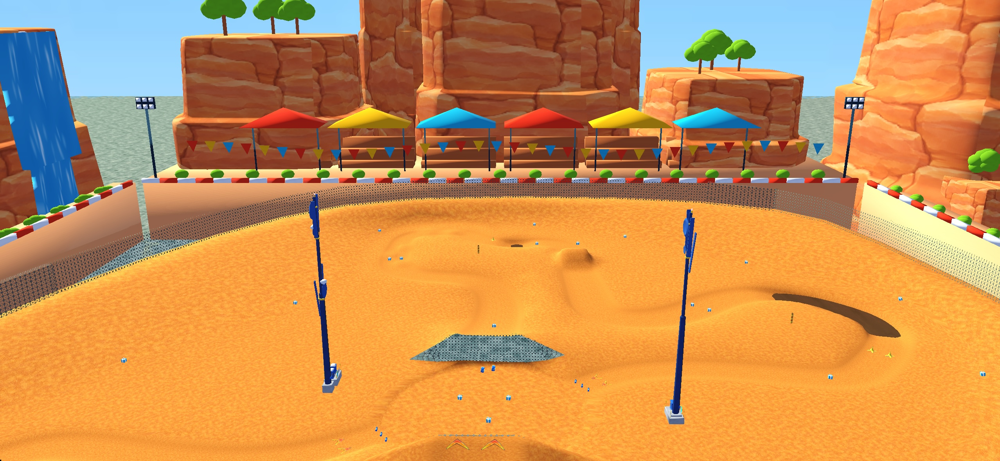
Общий вид арены с заполненным разрывом дальней стены. Кадр игрового движка со статичной камерой; не заезд.
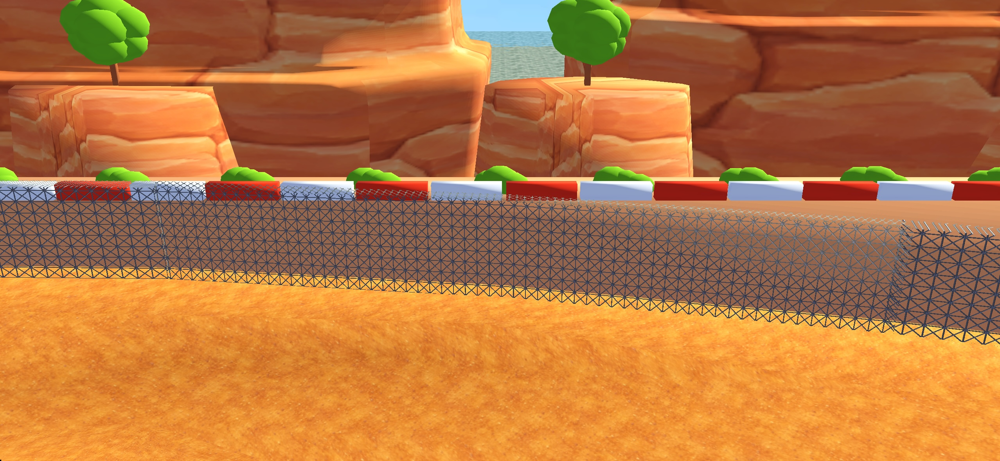
Западная сторона ограждения с закрытыми разрывами. Кадр игрового движка со статичной камерой; не проверка проезда.
Сохранённые параметры трёх секций · Вес ресурсов · Сохранение в проекте и симуляторе
Предыдущий отчёт и ранее сохранённые игровые кадры
FLUXARA DRIFT · КАРТА 03 · 01.10.2026
Dust Cross Split Combat
Дёрт-арена в красном каньоне
Доработана заготовка предыдущего агента: тёплое покрытие, скальное окружение, зелёные уступы, цветные трибуны, флажки, световые мачты и движущийся водопад. Исходная игровая геометрия сохранена.
52 дерева26 вариантов геометрии9 скриншотовВидео из симулятора
Итоговый Blender-файл · Вес и проверки · Сравнение с референсами
Итоговые кадры
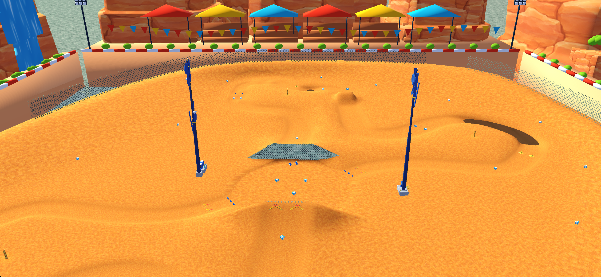
Арена целикомОбзорная камера в движке: исходная чаша, трамплины, предметы и башни сохранены. Окружение находится за границей проезжей части.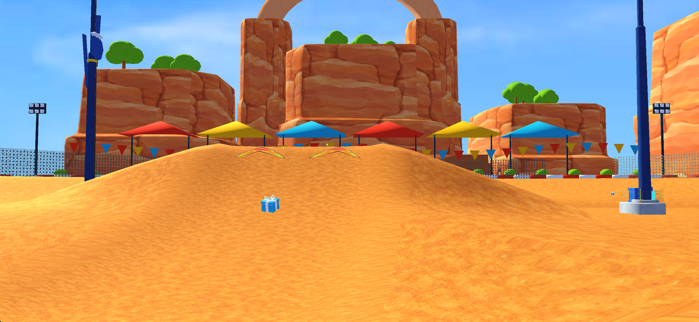
Ракурс с уровня трассыТёплый дёрт, красно-белый периметр, цветные навесы и зелёные вершины каньона.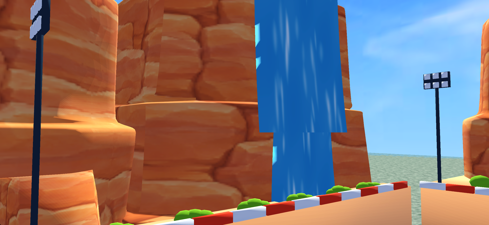
Водопад у западной скалыДва переиспользованных потока; исправлено направление граней и добавлена прокрутка водной текстуры.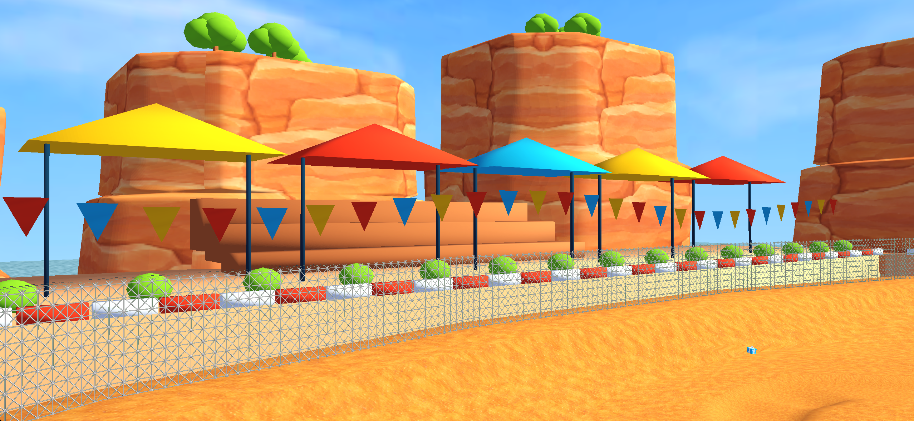
Южная трибунаИсправлены UV; красные, жёлтые и голубые навесы, гирлянды флажков и кусты на опорах.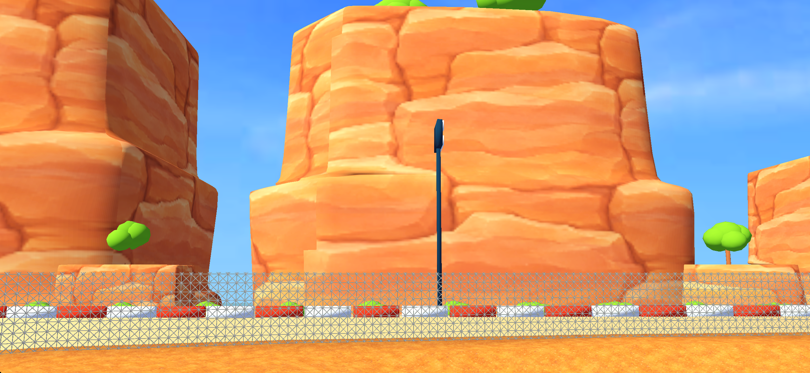
Восточный крайМалые скалы, зелень и мачты света обрамляют исходную арену.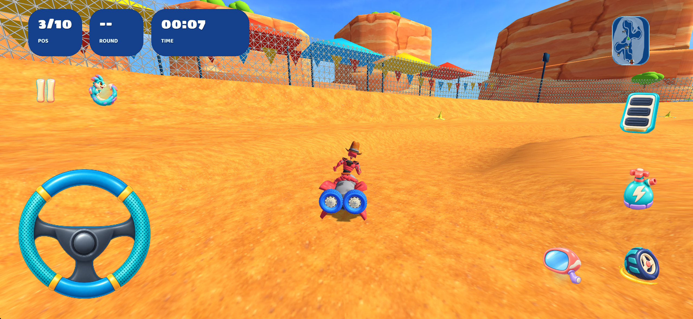
Движение — 10 секунд после запускаИтоговая установленная сборка; игрок управляется тестовым ИИ.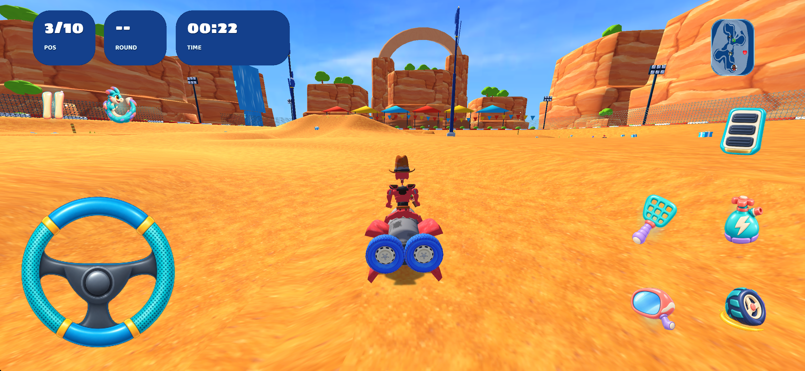
Движение — 25 секундПроверка боевой арены с соперниками и действующими предметами.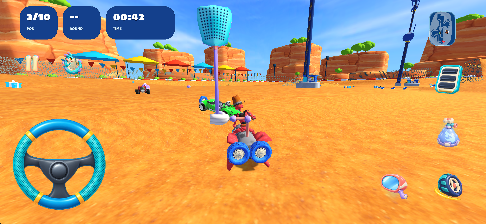
Движение — 45 секундОкружение в обычной игровой камере с интерфейсом.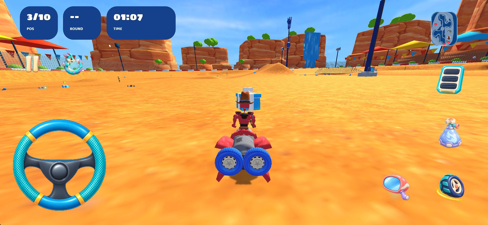
Движение — 70 секундДругой участок арены; приложение продолжает работать. Это не полное прохождение всех режимов.Проверка в движении
70 секунд реального запуска карты с тестовым ИИ игрока. Видно движение по исходной арене, интерфейс, предметы и соперников. Таймер игры начинается после загрузки и отсчёта.
Референсы и границы соответствия
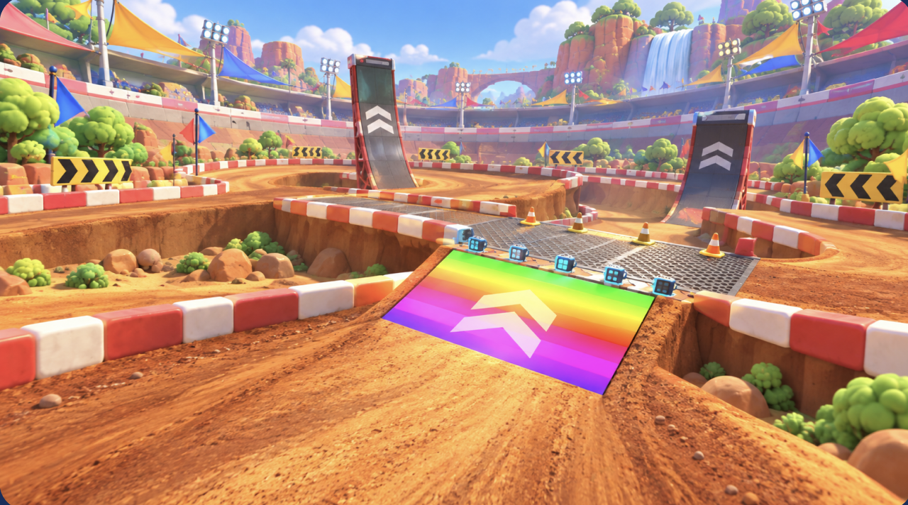
Референс 1Главный ориентир для арены: дёрт, трибуны, флажки, свет, красно-белые блоки.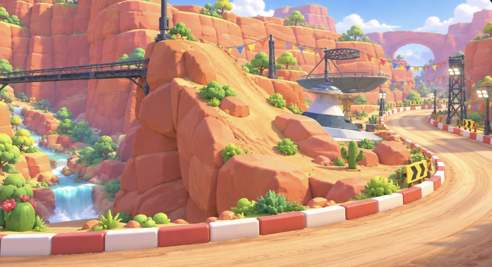
Референс 2Материалы красных скал, зелень и водопад.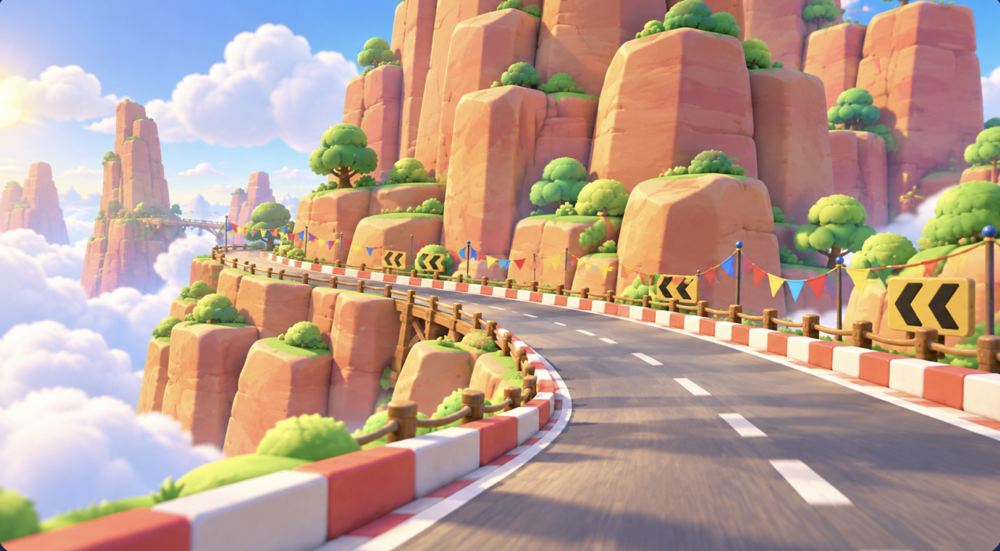
Референс 3Ступенчатые скалы, гирлянды и высотный силуэт окружения.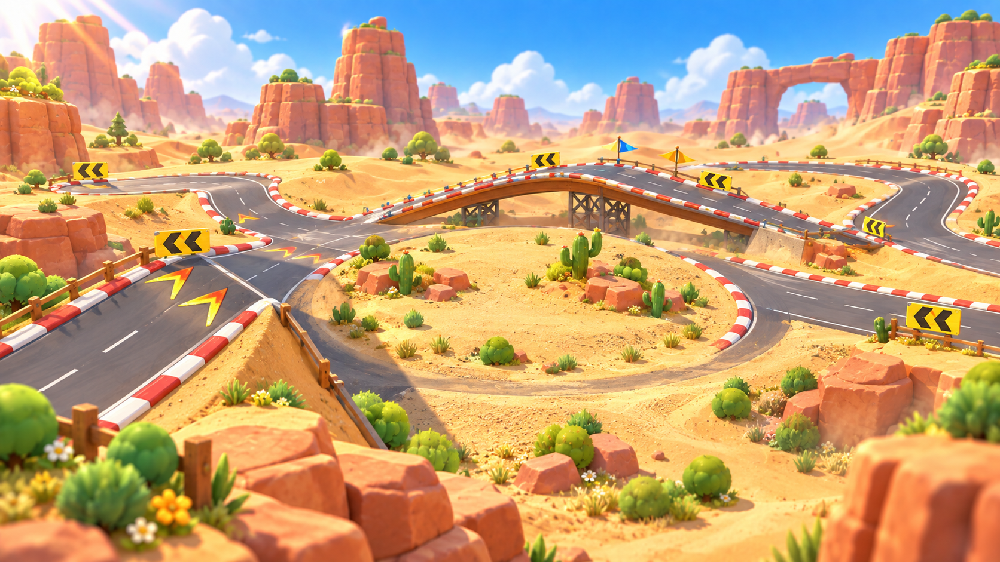
Референс 4Общий каньонный образ и каменная арка.Перенесены палитра и ключевые элементы окружения: красный песчаник, зелень, вода, навесы, флажки, красно-белые блоки и арка. Компоновка сохранённой арены отличается от референсов: новые серпантины, дороги над облаками и геометрия трамплинов не воспроизводились, поскольку менять проезжую поверхность нельзя. Освещение текущего игрового рендерера проще, чем на референсных изображениях. Это адаптация стиля, а не утверждение о совпадении 1:1.
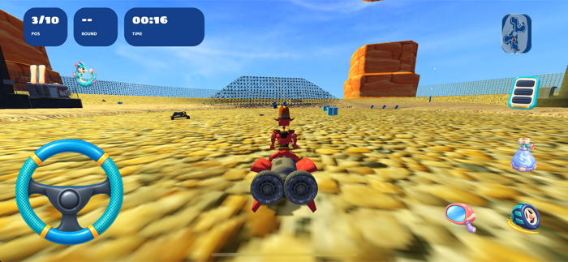
Заготовка предыдущего агентаАрхивный игровой кадр из progress/small-tex-8s.png. Сохранён для сравнения; это не итоговая версия.Вес, сохранность и проверки
| Что проверено | Результат | Уточнение |
|---|
| Проезжая геометрия | 11 112 треугольников, без изменений | SPM целиком совпадает с сохранённым исходником; UV и физические слоты сохранены. |
| Навигация и игровые точки | Без изменений | Навмеш, старты, предметы и трансформы существующих библиотек сверены. |
| Декорации | 85,064 → 96,520 треугольников; +13.47% | Рост ниже 20%; добавлены малые скалы, зелень, навесы и арка. Общие исходные меши пака не упрощались. |
| Деревья и кусты | 52 дерева, 170 кустовых элементов | 26 уникальных вариантов геометрии обслуживают 871 размещение декораций в Blender. |
| Полная папка ресурсов карты | 12.23 → 13.64 МБ; +11.54% | Это сравнение с заготовкой предыдущего агента, включая сохранённые исходные ресурсы. |
| Локальная папка карты в приложении | 7.19 МБ | Общие изображения и звук сборщик выносит в общие каталоги. Их размер не входит в эту строку. |
| Всё приложение | 337.59 МБ | Распакованная Debug-сборка iphonesimulator; не размер IPA или загрузки из App Store. |
| Blender | 7.47 МБ; один итоговый .blend | Файл повторно открыт; отсутствующих изображений нет. 74 игровых маркера перенесены без изменения координат. |
| Проверка в игре | Сборка успешна; 70 секунд боя | Четыре кадра движения, пять обзорных кадров и видео; исходники, сборка и установленная копия сверены по хешам. |
Все новые декорации имеют ghost-взаимодействие и находятся за консервативной прямоугольной границей исходной проезжей геометрии. Исходные металлические сетки, рампы и координаты радиобашен сохранены. Новая геометрия не добавляет коллизий. Проверка выполнена в iOS Simulator; измерений FPS, памяти на телефоне и полного прохождения всех режимов нет. В логах остаются прежние предупреждения локали, benchmark replay и MoltenVK.
Текстуры и общая библиотека
Каньонный атлас, песчаник, водный поток и геометрия растительности переиспользованы. Для дёрта создана одна бесшовная текстура встроенным ImageGen, уменьшенная до 256×256. Проверка повтора 3×3 · Точный промпт и происхождение. Варианты моделей, материалы и изображения сохранены в общем FLUXARA_TRACK_ASSET_PACK; индекс и реестр карты обновлены.
Файлы проверок